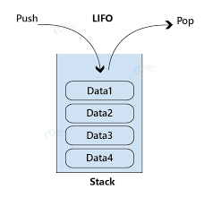

A Stack is a linear data structure that follows the Last-In, First-Out (LIFO) principle. This means that the element added last to the stack is the first one to be removed, similar to a physical stack of plates.

In a stack, all insertion and deletion operations take place at a single end called the Top. It is an abstract data type (ADT) commonly used across computer architecture and algorithms to manage temporary data.
top.Whether implemented via arrays or linked lists, standard stacks support these core operations:
An array representation uses a sequential, continuous memory block of fixed size to store data. A counter variable top tracks the index of the highest element.
Push Operation:
top == MAX_SIZE - 1, the stack is full; abort.top = top + 1.Stack[top] = value.Pop Operation:
top == -1, the stack is empty; abort.value = Stack[top].top = top - 1.value.A linked representation uses dynamic nodes to build the stack. Each node contains a data field and a pointer field linking to the next node below it. The pointer variable top acts as the head of the list, pointing directly to the topmost node.
In a linked stack, items are inserted and removed from the front of the single linked list to maintain O(1) constant time complexity.
Push Operation (Linked):
newNode = allocate Node.newNode.data = value.newNode.next = top.top = newNode.Pop Operation (Linked):
top == NULL, the stack is empty; abort.tempNode = top.top = top.next.value = tempNode.data.free tempNode.value.Stacks play a vital role in core operating system and software engine functions:
| Feature | Array Representation | Linked Representation |
|---|---|---|
| Size | Fixed size defined at declaration | Dynamic size determined at runtime |
| Memory Allocation | Static / Compile-time allocation | Dynamic / Heap allocation at runtime |
| Extra Memory Pointer | No pointer memory required per item | Requires memory for an address pointer per node |
| Errors | Prone to Stack Overflow | Prone to Heap Exhaustion (Out of Memory) |
| Access Speed | Faster due to memory locality | Slightly slower due to pointer traversal |